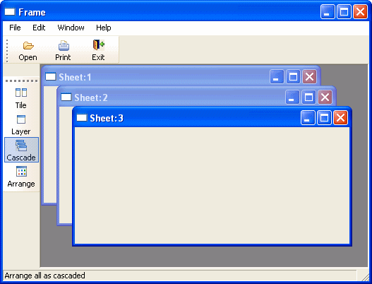
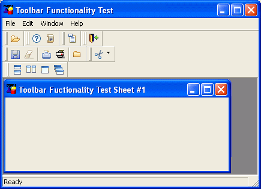
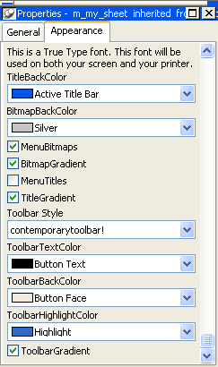
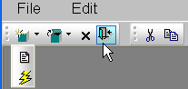

To make your application easier to use, you can add toolbars with buttons that users can click as a shortcut for choosing an item from a menu. In PowerBuilder, you can associate a toolbar with the window types listed in Table 14-4.
You can create a main window, an MDI window, or an MDI Help window in PowerBuilder by clicking the New button in the PowerBar and selecting Window on the PB Object tab page. The new window's type is Main by default. To change it to MDI or MDI Help, select the window type on the General page in the Properties view.
In MDI windows, you can associate a toolbar with the MDI frame and a toolbar with the active sheet. This screen shows New, Print, and Exit buttons on the toolbar associated with the MDI Frame, and window management buttons on the toolbar associated with the sheet. The toolbar associated with the MDI frame is called the FrameBar. The toolbar associated with the active sheet is called the SheetBar.

This section provides you with the information you need to create and use toolbars. For information about customizing toolbar behavior and saving and restoring toolbar settings, see Application Techniques .
Toolbars you add to a window behave like the toolbars provided in the PowerBuilder development environment:
A single menu can have more than one toolbar. When you associate a menu that has multiple toolbars with a window, PowerBuilder displays all the toolbars when you open the window. This screen shows a sheet open in an MDI frame, with one FrameBar and two SheetBars:

You can work with the toolbars independently. For example, you can float any of the toolbars, move them around the window, and dock them at different locations within the window.
The button associated with a menu item can appear on only one toolbar at a time. To indicate which toolbar a menu item's button belongs to, you set the ToolbarItemBarIndex property for the menu item. All items that have the same index number appear on the same toolbar.
PowerBuilder provides an easy way to add toolbars to a window: when you are defining an item in the Menu painter for a menu that will be associated with an MDI frame window, an MDI sheet, or a main window, you simply specify that you want the menu item to display in the toolbar with a specific picture. At runtime, PowerBuilder automatically generates a toolbar for the window containing the menu.
 To add toolbars to a window:
To add toolbars to a window:
In the Menu painter, specify the display characteristics of the menu items you want to display in the toolbar.
For details, see "Toolbar item display characteristics".
(Optional) In the Menu painter, specify drop-down toolbars for menu items.
In the Window painter, associate the menu with the window and turn on the display of the toolbar.
(Optional) In the Window painter, specify other properties, such as the size and location of a floating toolbar, on the Toolbar property page.
You select a toolbar style on the Appearance tab of the Properties view for the top-level menu object in the Menu painter.
A toolbar can have a contemporary or traditional style.
| Menu style | Description |
|---|---|
| Contemporary | A 3D-style toolbar similar to Microsoft Office 2003 and Visual Studio 2005 toolbars |
| Traditional | A more traditional and older toolbar style |
Toolbars that you import or migrate from earlier versions of PowerBuilder have the traditional style, and new toolbars use the traditional toolbar style by default.
 To specify the toolbar style:
To specify the toolbar style:
Select the top-level menu object.
At the bottom of the Appearance tab page, select the toolbar style you want, contemporarytoolbar! or traditionaltoolbar!

If you select traditionaltoolbar! in the Toolbar Style drop-down list, the rest of the toolbar style properties are grayed. If you select contemporarytoolbar! style, you can customize the display properties for that style and have them apply to all menu items with associated toolbar buttons in the current menu.
Selecting the toolbar button style property Unless you are using the traditional toolbar style for the current menu object, you can select the ToolbarAnimation check box on the Toolbar tab or the Properties view for each menu item. If you do not select an image for the ToolbarItemName property of a menu item, the selection you make for the ToolbarAnimation property is ignored.
You can customize the display of toolbars in applications that you create with PowerBuilder by setting toolbar properties.
In addition to customizing the style of a menu, you can customize the style of a toolbar associated with the menu. For example, the following picture shows a contemporary style toolbar with an expanded toolbar cascade and a highlighted Exit button:

Toolbar style properties Toolbars have style properties that you can change at design time on the top-level menu object. You can modify these properties only if you select contemporarytoolbar! as the toolbar style for the top-level menu object.
Toolbar item style property You can select the ToolbarAnimation property for a menu item toolbar button. This property offsets the button image by two pixels to the upper left when a user positions the cursor over the button. You cannot assign this property at the menu object or toolbar level. You must assign it to individual toolbar items (buttons) at design time. This property has a Boolean datatype. You can select it on the Toolbar tab for each menu item below the top-level menu object. With a contemporary menu, you can set the ToolbarAnimation property at runtime at runtime using scripts.
The customizable menu and toolbar styles can be used for MDI and main windows. Pop-up menus can also use menu style properties. The styles do not affect existing PowerBuilder applications that use a traditional style. You can, however, update an existing PowerBuilder application to use the new style properties.
In the Menu painter, you specify the menu items you want to display in the toolbar, the text for the toolbar button and tip, the pictures to use to represent the menu items, and other characteristics of the toolbar.
 To specify the display characteristics of a toolbar
item:
To specify the display characteristics of a toolbar
item:
Open the menu in the Menu painter and select the menu item you want to display in the toolbar.
Select the Toolbar property page and set properties of the toolbar item as shown in Table 14-5.
A menu item can have a toolbar button associated with it that displays a drop-down toolbar. When the user clicks on the button, PowerBuilder displays a drop-down toolbar that shows all of the toolbar buttons for menu items defined at the next level. For example, if you define a drop-down toolbar for the File menu item, the drop-down toolbar will show the buttons defined for the items on the File menu (such as New, Open, Close, and Exit).
PowerBuilder displays a drop-down toolbar at runtime by default if the Object Type of the menu item is MenuCascade. You can specify programmatically whether submenu items display in a drop-down toolbar or as normal toolbar items by setting the DropDown property of the menu item. For example, if you want a descendent menu item to have a drop-down toolbar, but not its ancestor, clear the DropDown check box on the ancestor's Toolbar property page, and set the DropDown property of the descendent menu item to TRUE in a script.
 To specify a drop-down toolbar for a menu item:
To specify a drop-down toolbar for a menu item:
In the Menu painter, select the menu item for which you want to add a drop-down toolbar.
On the Toolbar property page, change the Object Type to MenuCascade.
(Optional) Specify the number of columns you want to display in the Columns box.
The default is a single column. If there are many items on the submenu, as there are on the toolbar item for inserting controls in the Window painter, you will probably want to specify three or four columns.
In the Window painter, you associate the menu with the window on the window's General property page. The window displays the toolbar by default. If you do not want the toolbar to display, clear the ToolbarVisible check box on the window's Toolbar property page. You can also specify the toolbar's alignment and position on this property page.
You can specify global properties for all toolbars in your application on the Toolbar property page in the Application painter or by setting properties of the Application object in a script. Typically you set these in the application's Open event, but you can set them anywhere.
By default, PowerBuilder provides a pop-up menu for the toolbar, which users can use to manipulate the toolbar. It is similar to the pop-up menu you use to manipulate the PowerBar and PainterBar.
You can change the text that displays in this menu, but you cannot change the functionality of the menu items in the menu. Typically, you do this when you are building an application in a language other than English.
You change the text as follows:
ToolbarPopMenuText = "left, top, right, bottom, floating, showText,
showPowerTips"
For example, to change the text for the toolbar pop-up menu to German and have hot keys underlined for each, you would specify the following:
ToolbarPopMenuText = "&Links, &Oben, &Rechts, " + &
"&Unten, &Frei positionierbar, &Text anzeigen, " &
+ "&PowerTips anzeigen"